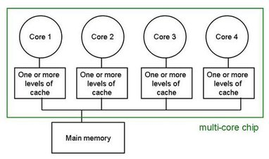

Savio parallel processing training
April 21, 2020
Nicolas Chan, Christopher Hann-Soden, Chris Paciorek, Wei Feinstein
Introduction
We’ll do this mostly as a demonstration. We encourage you to login to your account and try out the various examples yourself as we go through them.
Much of this material is based on the extensive Savio documention we have prepared and continue to prepare, available at our new documentation site: https://docs-research-it.berkeley.edu/services/high-performance-computing as well as our old site: http://research-it.berkeley.edu/services/high-performance-computing.
The materials for this tutorial are available using git at the short URL (https://tinyurl.com/brc-feb20), the GitHub URL (https://github.com/ucb-rit/savio-training-parallel-2020), or simply as a zip file.
Outline
- Introduction
- Hardware
- Parallel processing terms and concepts
- Approaches to parallelization
- Embarrassingly parallel computation
- Threaded computations
- Multi-process computations
- Considerations in parallelizing your work
- Submitting and monitoring parallel jobs on Savio
- Job submission flags
- MPI- and openMP- based submission examples
- Monitoring jobs to check parallelization
- Parallelization using existing software
- How to look at documentation to understand parallel capabilities
- Specific examples
- Embarrassingly parallel computation
- GNU parallel
- Job submission details
- Parallelization in Python, R, and MATLAB (time permitting)
- High-level overview: threading versus multi-process computation
- Dask and ipyparallel in Python
- future and other packages in R
- parfor in MATLAB
Introduction: Savio
Savio is a cluster of hundreds of computers (aka ‘nodes’), each with many CPUs (cores), networked together.

Introduction: multi-core computers
Each computer has its own memory and multiple (12-56) cores per machine.

savio2 nodes: two Intel Xeon 12-core Haswell processors (24 cores per node (a few have 28))
So a cartoon representation of a cluster like Savio is like this.
Introduction: Terms and concepts
- Hardware terms
- cores: We’ll use this term to mean the different processing units available on a single node. All the cores share main memory.
- cpus and processors: These generally have multiple cores, but informally we’ll treat ‘core’, ‘cpu’, and ‘processor’ as being equivalent.
- hardware threads / hyperthreading: on some processors, each core can have multiple hardware threads, which are sometimes (but not on Savio) viewed as separate ‘cores’
- nodes: We’ll use this term to mean the different machines (computers), each with their own distinct memory, that make up a cluster or supercomputer.
- Process terms
- processes: individual running instances of a program.
- seen as separate lines in
top and ps
- software threads: multiple paths of execution within a single process; the OS sees the threads as a single process, but one can think of them as ‘lightweight’ processes.
- seen as >100% CPU usage in
top and ps
- tasks: individual computations needing to be done
- easily confused with MPI tasks: the individual processes run as part of an MPI computation
- workers: the individual processes that are carrying out a (parallelized) computation (e.g., Python, R, or MATLAB workers controlled from the master Python/R/MATLAB process).
Introduction: High-level considerations
Parallelization:
- Ideally we have no more (often the same number of) processes or processes+threads than the cores on a node.
- We generally want at least as many computational tasks as cores available to us.
Speed:
- Getting data from the CPU cache for processing is fast.
- Getting data from main memory (RAM) is slower.
- Moving data across the network (e.g., between nodes) is much slower, as is reading data off disk.
- Infiniband networking between compute nodes and to /global/scratch is much faster than Ethernet networking to login nodes and to /global/home/users
- Moving data over the internet is even slower.
Introduction: Common Bottlenecks
- Constrained by memory (RAM) bandwidth
- For example, each thread is loading lots of data into memory
- Constrained by filesystem bandwidth
- For example, 10 nodes all trying to read the same large file on scratch
- Amdahl’s Law: Your task must take at least as long as the sequential part.
- For example, if every task has to load a Python library that takes 10 seconds, then your job will take at least 10 seconds. If not all the tasks are running at the same time, then it will take much more than that.
Possible solutions:
- Fewer tasks per node will reduce strain on memory
- You would still be given exclusive access to the node (and charged for that), so there will be a tradeoff here with the cost. It’s possible running fewer tasks will give you better performance so you take less time and save money, but you are also running fewer tasks at a time. The sweet spot will depend on your particular task.
- Reduce number of filesystem operations
- Find ways to reduce sequential bottlenecks
Introduction: Types of parallelization
- Vector instructions (AVX2/AVX512)
- Embarrassingly parallel computation of multiple jobs on one or more nodes*
- Parallelize one job over CPU cores*
- Parallelize one job over multiple nodes*
* focusing on these strategies today
Types of parallelization: Embarrassingly parallel computation
Aka: naturally, pleasingly, perfectly parallel
You have a certain number of computational tasks to carry out and there are no dependencies between the tasks.
- Naturally parallel
- Pleasingly parallel
- Perfectly parallel
E.g., process multiple datasets, or do a parameter sweep over multiple parameter sets.
Tools:
* focusing on this approach today
Types of parallelization: Threaded computations
- Single process controls execution
- Use of code libraries that allow the process to split a computation (see example across multiple software threads (still one process)
PID USER PR NI VIRT RES SHR S %CPU %MEM TIME+ COMMAND
15876 zhang 20 0 17.321g 0.015t 91828 S 410.6 5.9 14158:58 python
- Threads share memory and data structures (beware ‘race’ conditions)

(image provided by https://computing.llnl.gov/tutorials/openMP.)
Types of parallelization: Threaded computations (part 2)
Examples in standard software:
- MATLAB threads some computations behind the scenes
- vectorized calculations
- linear algebra (MKL)
- If set up appropriately (true on Savio), R and Python rely on threaded linear algebra (OpenBLAS)
Rolling your own:
- OpenMP (for C/C++/Fortran)
- pthreads (for C/C++)
- Intel threaded building blocks (TBB) (for C++)
Types of parallelization: Multi-process computations
Standard software (e.g., Python, R, MATLAB) allow you to start up multiple workers and farm out independent computations.
- Master process controls execution
- Workers are separate processes
PID USER PR NI VIRT RES SHR S %CPU %MEM TIME+ COMMAND
21718 lin-er 20 0 1171176 930020 4704 R 100.0 0.7 1:18.90 R
21729 lin-er 20 0 1173352 931888 4524 R 100.0 0.7 1:05.89 R
21714 lin-er 20 0 1189080 947924 4704 R 100.0 0.7 1:18.95 R
21715 lin-er 20 0 1151192 909984 4704 R 100.0 0.7 1:18.97 R
21716 lin-er 20 0 1174212 933056 4704 R 100.0 0.7 1:18.93 R
- Often have more computational tasks than workers
- Examples:
- Python Dask, ipyparallel, ray
- R future, foreach, parallel::parLapply
- MATLAB: parfor
- Easy to run on one node with limited (1-2 lines of code) setup
- Many of these can run across multiple nodes but require user to set things up.
Types of parallelization: Distributed computations
Traditional high-performance computing (HPC) runs a large computation by (carefully) splitting the computation amongst communicating MPI workers (MPI ‘tasks’ or ‘ranks’).
Comments:
- multiple (e.g., 20 above) copies of the same executable are run at once (SPMD)
- code behaves differently based on the ID (‘rank’) of the process
- processes communicate by sending ‘messages’
- MPI can be used on a single node if desired.
- OpenMPI is the standard MPI library but there are others
- Can run threaded code within MPI processes
Introduction: Other kinds of parallel computing
- GPU computation
- Thousands of slow cores
- Groups of cores do same computation at same time in lock-step
- Separate GPU memory
- Users generally don’t code for a GPU directly but use packages such as Tensorflow or PyTorch
- Multi-GPU computation has some commonalities with multi-node MPI work
- Spark/Hadoop
- Data distributed across disks of multiple machines
- Each processor works on data local to the machine
- Spark tries to keep data in memory
Parallel processing considerations
- Use all the cores on a node fully
- Have as many worker processes as all the cores available
- Have at least as many tasks as processes (often many more)
- Only use multiple nodes if you need more cores or more (total) memory
- Starting up worker processes and sending data involves a delay (latency)
- Don’t have very many tasks that each run very quickly
- Having tasks with highly variable completion times can lead to poor load-balancing (particularly with relatively few tasks)
- Writing code for computations with dependencies is much harder than embarrassingly parallel computation
Submitting and Monitoring Jobs
Submitting jobs: Available Hardware
- Partitions
- savio (Intel Xeon E5-2670 v2): 164 nodes, 20 CPU cores each (Supports AVX2 instructions)
- savio2 (Intel Xeon E5-2670 v3): 136 nodes, 24 CPU cores each (Supports AVX2 instructions)
- and others…
- See the Savio User Guide for more details.
Submitting jobs: Slurm Scheduler
Slurm is a job scheduler which allows you to request resources and queue your job to run when available.
Slurm Environment Variables (for parellelism)
Slurm provides various environment variables that your program can read that may be useful for managing how to distribute tasks. These are taken from the full list of Slurm environment variables listed on the Slurm sbatch documentation.
$SLURM_NNODES - Total number of nodes in the job’s resource allocation.$SLURM_NODELIST - List of nodes allocated to the job.$SLURM_JOB_CPUS_PER_NODE - Count of processors available to the job on this node.$SLURM_CPUS_PER_TASK - Number of cpus requested per task.
Submitting Parallel Jobs
Examples taken from: Running your Jobs
OMP Job
Notice that we set --cpus-per-task and then access the environment variable to set the OMP number of threads to use. If you have another way of doing multithreaded tasks, you can use the same $SLURM_CPUS_PER_TASK environment variable.
OpenMPI job
Notice we request 2 nodes and have 20 tasks per node. We could also leave out the number of nodes requested and simply say 40 tasks, and then Slurm would know we need 2 nodes since we said to use 1 CPU per task.
Monitoring Jobs
How do I know if my job is using resources efficiently?
While job is running
Using srun and htop:
Using warewulf:
After the job has run
Not perfectly accurate, since it measures only the parent process of your job (not child processes). Ideally, TotalCPU will be as close as possible to CPUTime.
Parallelization using existing software (Christopher)
Embarrassingly parallel computation (Wei)
How to get additional help
- For technical issues and questions about using Savio:
- brc-hpc-help@berkeley.edu
- For questions about computing resources in general, including cloud computing:
- brc@berkeley.edu
- (virtual) office hours: Wed. 1:30-3:00 and Thur. 9:30-11:00
- For questions about data management (including HIPAA-protected data):
- researchdata@berkeley.edu
- (virtual) office hours: Wed. 1:30-3:00 and Thur. 9:30-11:00
Zoom links for virtual office hours:
Upcoming events and hiring
- Research IT is hiring graduate students as domain consultants. Please chat with one of us if interested.